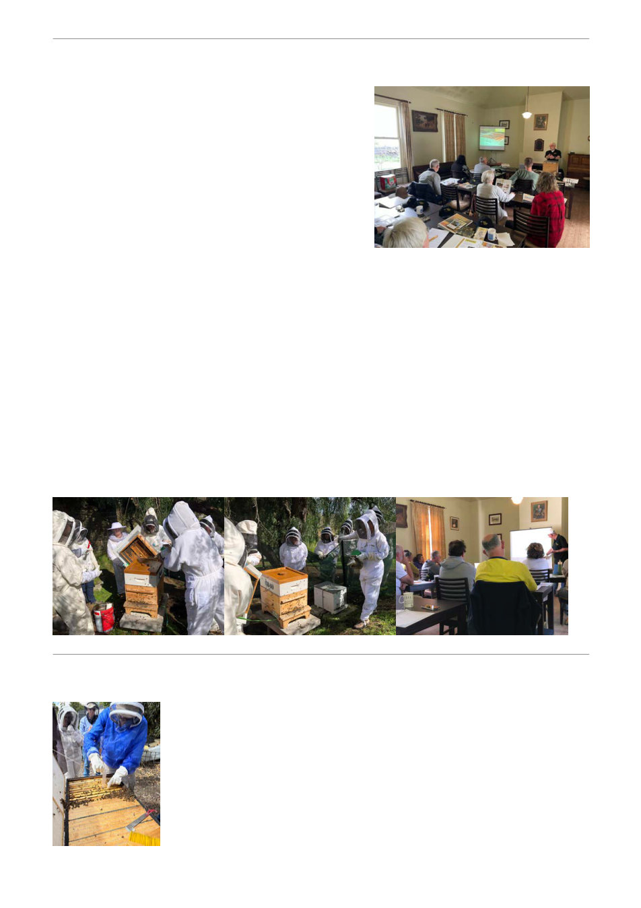

Beekeeping Essentials Course
We held our first Beekeeping Essentials Course for the
season, with 10 enthusiastic attendees.
Unfortunately, the weather was not on our side, with
strong winds and rain making it unsafe to open the hives.
However, we were still able to cover some important
aspects of hive management. We showed a couple of
videos demonstrating how to open a hive and also
demonstrated how to light and use a smoker.
We also visited the hives from behind and inspected the
activity at the entrance of each hive. Hopefully, we can
organise for the group to attend one of our next hive openings at the Heights, where they will have
the opportunity to see a hive inspection in person.
Despite the weather, it was a really enjoyable and successful day, with lots of positive feedback from
the attendees. We were also pleased to finish the course right on time.
A big thank you to Stephen Davey for all his work in preparing the course notes and folders, and for
his great support on the day, along with John Bemelmans.
Regards, Stephen Fridey
Our next Beekeeping Essentials Course will be held on
Saturday 14th November 2026.
If you have not yet participated in one of these courses, now is your chance to get a really good
hands on grounding in Beekeeping. Login to the members area to book now.
Varroa Advice
At the August meeting, Ian Ashman presented the 7th "Synthetic Chemicals"
Varroa education module aimed to help members deal with the arrival of
Varroa in the area. Our website page "Varroa management"
(https://gbkc.au/Main.asp?_=~cid~485) is updated regularly as our new
modules are presented and also with a wide array of other interesting
information.
Sue Moritz will present Module 8 - "Soft/Organic Chemicals" at the
forthcoming September meeting.